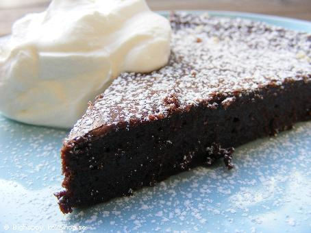

Ingredienser
Gör så här:
Sätt ugnen på 175°. Smält smöret och rör ihop ägg och socker i en bunke. Blanda de torra ingredienserna och rör ner i smeten tillsammans med smöret. Häll smeten i en smord och bröad form med löstagbar kant, ca 24 cm i diameter. Grädda i mitten av ugnen 17–20 min tills kakan är torr på ytan men fortfarande känns lite lös i mitten. Låt kakan svalna.
